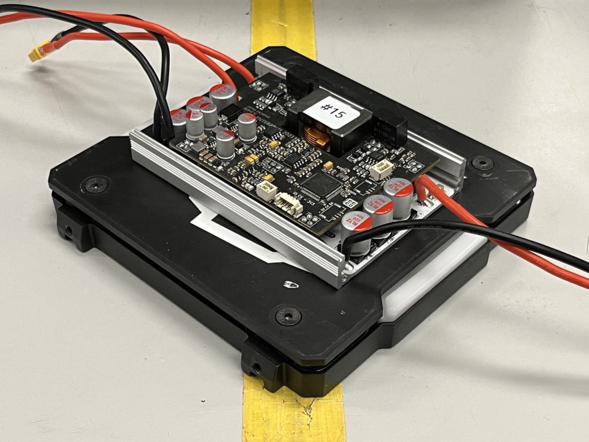
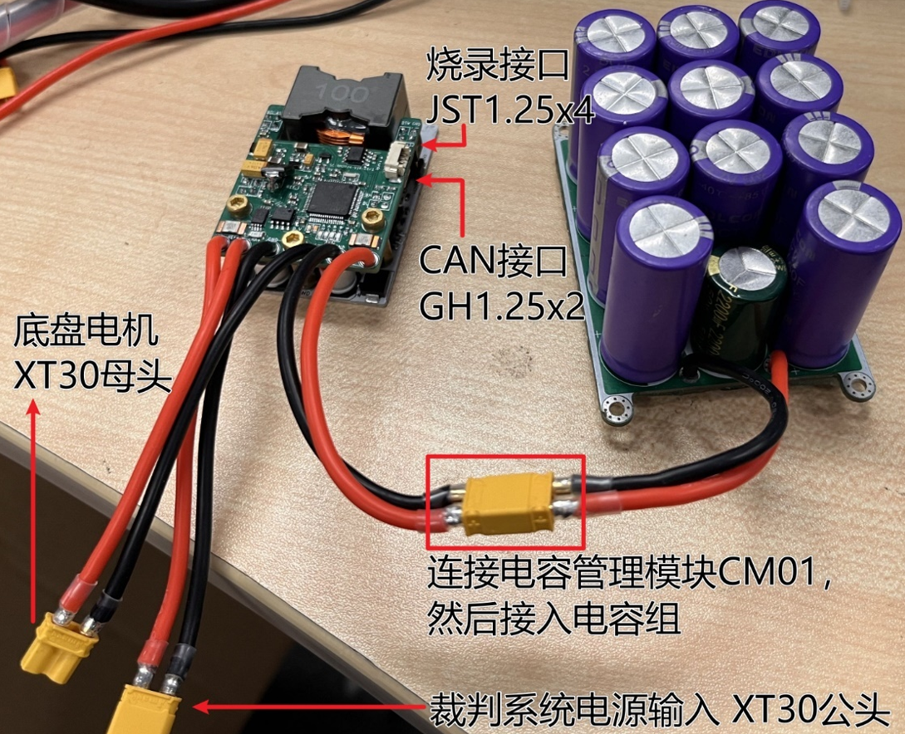
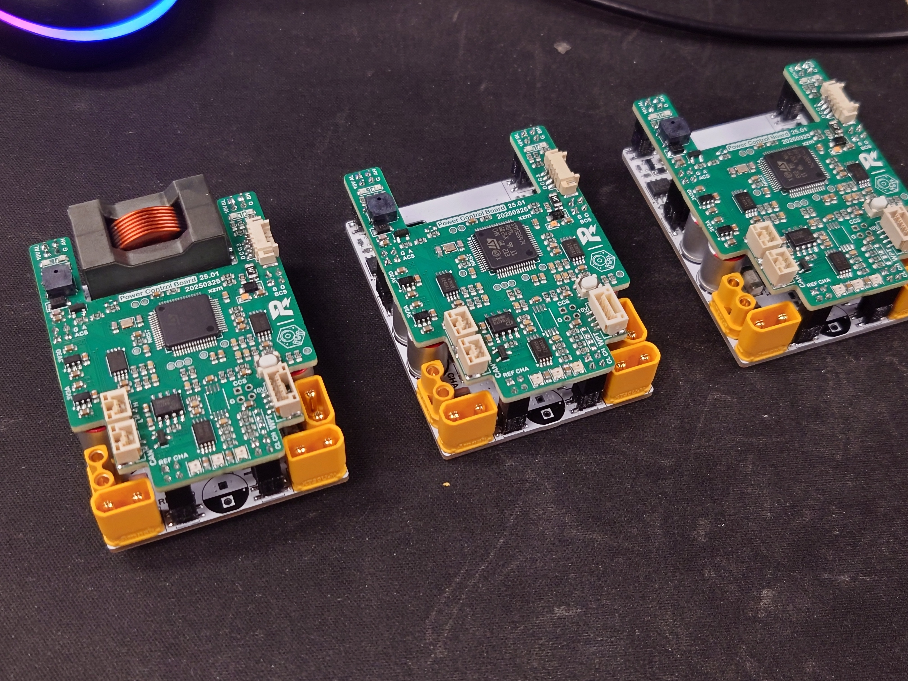
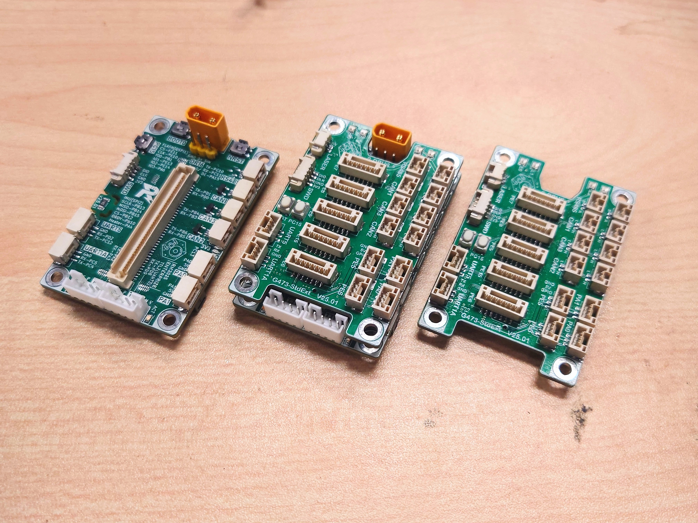

超级电容软、硬件开源
ENTERPRIZE 早期超级电容方案的软硬件分享。
—论坛被引用
以下项目以 RoboMaster 论坛开源汇总帖为索引。将鼠标移至卡片，或以键盘聚焦其中的链接，可展开项目预览。GitHub Stars 与论坛「被引用」数据由仓库的自动任务更新；没有可核验公开仓库的项目不会显示 Stars。
ENTERPRIZE 早期超级电容方案的软硬件分享。

INDEX 02 · RM2023 · POWER数控超级电容系统的赛季开源资料。

INDEX 03 · RM2024 · POWER超级电容控制器硬件与软件的完整分享。
覆盖舵轮、轮腿和全自动调参的功率控制思路。
PROJECT PREVIEW · PENDING面向机器人供电的紧凑型电容组设计分享。
PROJECT PREVIEW · PENDING
INDEX 06 · RM2025 · POWER超级电容系统与无线充电方案的赛季资料。
 INDEX 07 · RM2025 · VISION
INDEX 07 · RM2025 · VISION单目视觉雷达站算法与赛季数据表现分享。
低成本工程机器人技术报告、结构与控制器资料。
面向四级矿任务的轮式机械臂工程方案。
轮腿平衡步兵的机械结构设计分享。

INDEX 11 · RM2025 · EMBEDDEDRM2025 赛季 G4 主控板硬件开源资料。
面向新成员的赛季培训与学习资料。
当前筛选没有对应条目。
访问 GitHub 组织页查看当前公开仓库，或回到招新页面，加入下一次把想法变成机器人的航行。
访问 GitHub 组织 ↗ 加入 ENTERPRIZE ⟶